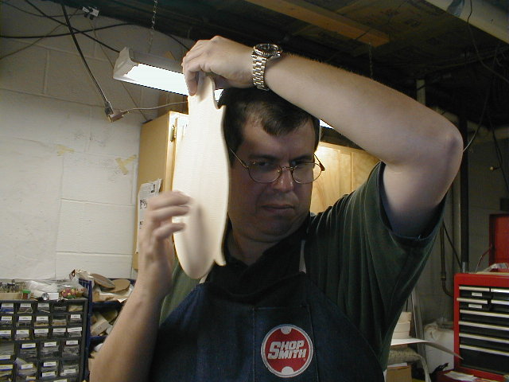

←
12345678910111213
→
Plate thicknessing, F hole cutting.
- 29) The form is flipped over and the label is applied. I use my plexiglas template to figure out approximately where the F holes are so I can center the label.
- 30) I started carving a perfect piece of red spruce for Gary's mandolin and after the final cut, noticed a small cosmetic blemish. As a result, I won't use this top. Acoustically and structurally, it's fine. Anyone want a good deal on a mandolin top?!
- 31) Back to Chris' mandolin now. The Englemann spruce is on my duplicator. Here it is after the first pass.
- 32) I set the router for a slightly deeper cut and make a second pass."
- 32b) The third pass pretty much does it.
- 33) Now, I start checking thicknesses and planning (with finger planes, to near the final thickness. I'm using my calipers to check progress.
- 
- 34) I tap the tops to see what note they resonate at. There is no good historical data on just what note it should be, so I keep a record of what each one taps at and figure out what works best for me. I'll check it again once the f holes are cut and the tone bars are carved.
- 35) The top is graduated on Chris' mandolin and I'm ready to route the F holes. I use a small radial arm saw (that has a router bit collet) and set it up as a pin router. I'm pointing to an 1/8" diameter pin in the base, and there is an 1/8" dia. bit in the collet. I've taken a
plexiglas template with the F holes cut in it, and using double stick tape, attach it to the inside of the top.
- 36) I flip the entire thing over, put the F hole cutout over the pin, and slowly lower the router bit until it makes contact at the highest point. It takes about 6 passes to route the F hole, going just a bit deeper with each pass. Doing it this way assure proper size and location of the F holes every time.
←
12345678910111213
→
© Lynn Dudenbostel, 2002.